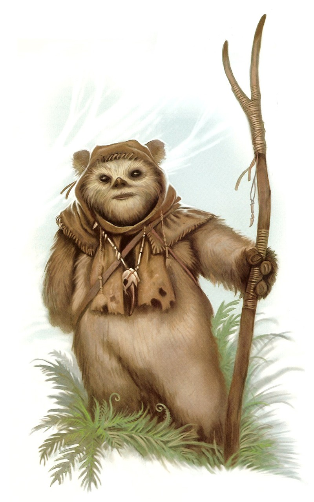

Ewok
ewok
Special Abilities: Ewoks are usually smaller than average and count as silhouette 0. They begin the game with one rank in either Stealth or Survival. They still may not train either skill above rank 2 during character creation.
Acute Senses: Ewoks add to Perception and Vigilance checks.
Low-Tech Users: Ewoks upgrade the difficulty of any checks involving advanced technology not available on their home planet once. If an Ewok uses a particular piece of advanced technology for an extended period of time, they make become familiar with it and may be exempt from this rule when using that piece of technology (at the GM’s discretion). In addition, with their GM’s approval, a player with an Ewok character may spend 10 XP to remove this disadvantage from their character.
Ewoks are small, fur-covered, ursine beings who inhabit the forest moon of Endor, an Outer Rim world circling a gas giant system near the area of the galaxy known as the Unknown Regions. While Imperial propaganda depicted them as having been wiped out after the Battle of Endor, the intelligent, primitive Ewoks still live in sizable communities in their wooded home, a lush environment alive with thick vegetation and myriad forms of wildlife. The world’s low axial tilt and its regular orbit around the gas giant create a temperate climate for most of the moon, and three-hundred-meter tall trees cover many regions and are central to the landscape. For this reason, they are significant to Ewok culture and religion.
Though Ewoks suffer from limited eyesight, these small creatures have an excellent sense of smell that more than compensates. They are accomplished hunters, and, being omnivores, they also gather food from the plants that surround them. In some cases they have been known to mistakenly eat sentient beings, assuming they were simply large game to be captured. However, they can usually be convinced to put away their cooking implements after some conversation and a little bit of luck.
While they forage and hunt, Ewoks are extremely alert and easily startled. Many carnivorous creatures inhabit the forest moon, and thus Ewoks are always prepared for an attack. Some researchers have noted that they seem to possess a “sixth sense”—the ability to perceive threats to their community far in advance. It has been likened to some Jedi Force talents, although only a few Ewoks have shown the ability to truly manipulate this mysterious power.
Ewoks are curious, good-natured creatures who value com- and munity, family, and friendship. Their culture is gender-based, with the males serving as hunters, warriors, chieftains, and shamans, and the females acting as gatherers and domestics, rearing and educating their young. Music and dancing are part of everyday life; in fact, Ewoks use music to communicate with other villages via rhythmic drumbeats. As news echoes fam through the ancient trees, it imbues their environment with an aura of extra life.
Though their culture is rich in historic lore, art, and music, Ewoks are primitive, wearing only hoods adorned with bones and feathers for decoration and to indicate status in the community. They learn quickly, however, and when exposed to technology, they will figure it out easily—sometimes after an initial bout of jitters and mistakes. Few have yet ventured into space, and when they do it is typically by tagging along with star pilots or crews that visit their planet. Among these few are a select number who have learned modern technology enough to be useful on space crews.
Ewoks have developed no technology of their own beyond standard woodworking tools and rudimentary weapons. But they possess a flair for invention with their primitive resources—creating traps and snares that can be highly effective even against great technological threats. Their ingenuity was key to the Rebel Alliance’s defeat of the Empire at the Battle of Endor, and if given leave to explore and learn the ways of technology, they will frequently become adept.
The Forest Moon of Endor is a small green sphere, the second of nine moons orbiting a silver-banded gas giant known to its native Ewoks as Tana. (Reports that the gas giant vanished in a cataclysm are false, and have become known as the “Endor Moon Hoax.”) The Forest Moon has lighter-than-standard gravity and an ecosystem bursting with life, including three native sentient species. The Forest Moon is also home to castaways: Local space is plagued by hyperspace anomalies that have wrecked starships from nearby Sanyassa and Zorbia, as well as transports belonging to starhoppers hailing from far-off ports.
The language of this species is expressive yet simple, and can be learned and spoken by humans. Because the verbal nuances are similar, Ewoks can also learn to speak several human languages. And through their exposure to more and more offworlders since the Battle of Endor, many homebound Ewoks have taken to speaking to visitors in a pidgin form of Ewok-Basic.
The Ewok people are suspicious and cautious, yet fierce fighters, brave and loyal to their tribe. This is also evidenced in their religion, which emphasizes the importance of home, family, and the trees surrounding them. A new tree is planted for each Ewok at birth, and is considered that being’s “life tree.” Ewoks believe that their spirits pass into these trees when they die. Moreover, Ewoks regard these trees as their guardians, and in times of crisis, the tribal leaders will commune with the oldest and wisest trees, seeking guidance. The trees, they believe, are intelligent, long-lived beings who watch over them, and in a reciprocal manner they must safeguard the trees. This belief was one of the main reasons that they aided the Rebels in their fight against the Empire, as they felt that the Empire posed threat to every aspect of their environment.
War is not common among the Ewoks, however. Although they exist in tribes and remain fiercely loyal to them, Ewoks will greet other tribes with warmth and goodwill, as long as they act with honor and respect. They will even accept outsiders into their tribe if the visitors demonstrate a familial loyalty to them (if the strangers haven’t already been mistaken for dinner). Although as skilled at building weaponry as they are at constructing their elaborate villages, arms are mainly kept handy to defend against outside threats, rather than against one another.
Because religion is so important to Ewok society, the village shaman governs a tribe side by side with the ruling chieftain. The shaman interprets signs to guide the chieftain in his decisions, and their belief system includes references to a living energy similar to the Force that feeds the trees and likewise strengthens and guides the Ewoks.